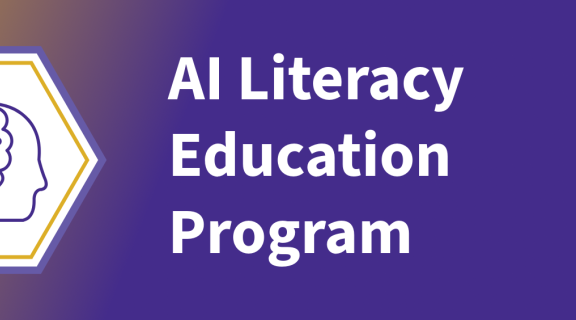

今日舉行
AI 素養精要：實務提示詞應用
AI Literacy Essentials: Prompting for Practical Applications
聚焦生成式 AI chatbot 提示與迭代策略：寫清晰提示、 refinement、評估輸出準確與相關性。屬 AI Literacy Education Program 數位徽章必修課；需基本熟悉 Copilot／ChatGPT。
官方頁明確 Cost Free、Location Zoom。
官方連結 →